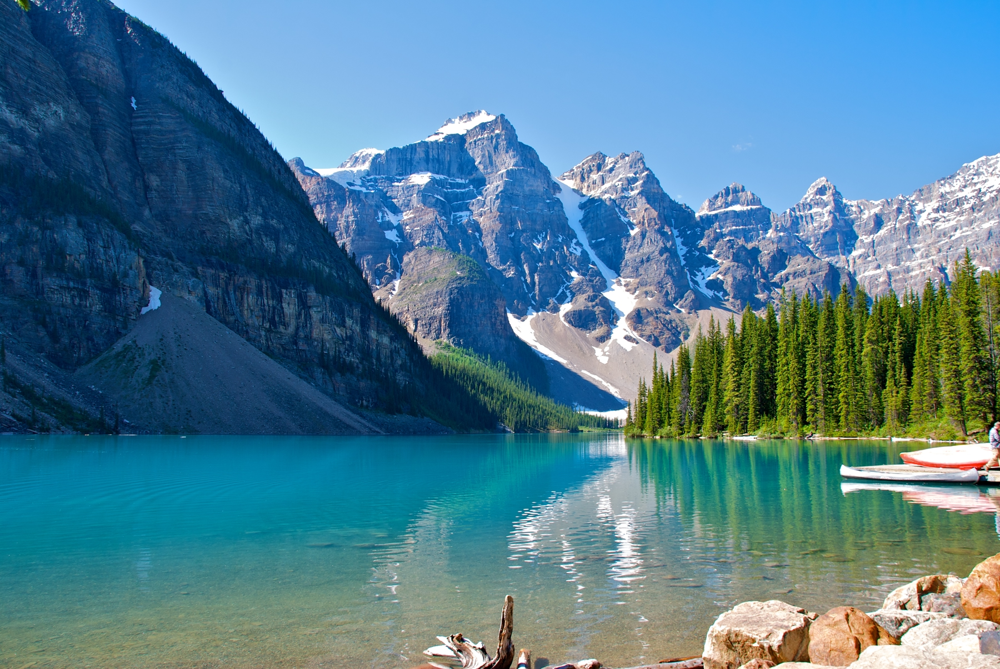

1. Machu Picchu – Peru

Machu Picchu é um desses lugares em que é preciso desfrutar ao menos uma vez na vida. A energia inexplicável do local e a bela paisagem que cerca essa Maravilha do Mundo Moderno atraem muitos viajantes durante todo o ano. Recomendamos madrugar e chegar na primeira hora da manhã para conseguir ver os primeiros raios de sol abrindo passagem pelo nevoeiro que cobre Machu Picchu durante a noite. Se a névoa demorar para desaparecer, não se desespere, o tempo costuma abrir e mostrar Cidade Perdida dos Incas em toda a sua grandeza!
2. Angkor Wat – Camboja

Descoberta no final do século 16, a capital do antigo império Jemer é considerada a maior estrutura religiosa do mundo. Angkor é um dos lugares mais incríveis da Ásia e também do planeta. Inúmeros turistas visitam diariamente seus templos, portanto, madrugar é imprescindível para conseguir desfrutar de um dos melhores amanheceres do mundo e sem muitas pessoas à sua volta. Estender o dia até o pôr do sol, quando a luz cai exatamente em frente aos templos, também é um prêmio que transforma a atmosfera deste lugar.
3. Taj Mahal, Agra – Índia

Nenhuma das listas dos lugares fascinantes do planeta estará completa se não tiver o Taj Mahal, uma das construções mais bonitas do mundo e a maior obra já construída por amor. Não deixe de ir até a margem oposta ao rio Yamuna, onde você poderá contemplar uma perspectiva totalmente diferente da vista do Taj Mahal. No entardecer, as luzes do pôr do sol dão um aspecto incrivelmente bonito ao mausoléu.
4. Petra – Jordânia

É fácil se sentir um explorador em Petra. Atravessar a primeira hora da manhã e dar de frente ao Tesouro, uma das principais maravilhas de Petra, é uma experiência das mais fascinantes que você poderá ter em suas viagens. Depois dessa parada em frente ao Tesouro, você se dirija ao Monastério, um lugar que, depois de uma subida de 45 minutos, vai te deixar com a boca aberta.
5. A Grande Muralha – China

Símbolo do país e um dos lugares mais famosos do mundo, a Grande Muralha da China é um daqueles lugares imperdíveis quando se viaja ao país — a ponto de alguns dizerem que quem não visitou a Muralha Chinesa quando esteve em território chinês, não foi à China. Apesar do acesso fácil a partir de cidades como Badaling, a uns 80 quilômetros de Pequim, se você quiser ter uma experiência mais autêntica, vá às regiões de Jinshanling e Simatai a 120 e 140 quilômetros da capital chinesa. Lá você poderá fazer trekking de 5 a 6 horas — nada fácil, mas incrível — e desbravar, praticamente sozinho, regiões pouco ou nada restauradas da Grande Muralha da China.
6. Tikal – Guatemala

Localizado no coração da selva e considerado um dos locais mais importantes da antiga Civilização Maia, Tikal é um desses lugares incríveis que não te deixam indiferente. Recomendamos dedicar tempo suficiente para conhecê-la e chegar perto das estruturas mais importantes, especialmente aquelas da Grande Praça, símbolo de Tikal e também da Guatemala. Apesar de o nascer do sol do Templo V ser uma das grandes recomendações, aconselhamos você a não se esquecer do entardecer, um dos momentos mais especiais em Tikal, tanto do Templo V como do Templo II, na Grande Praça.
7. Yellowstone – Estados Unidos

Uma única visita ao Parque Nacional de Yellowstone já justifica qualquer viagem a esta região dos Estados Unidos. É aqui que se pode encontrar a metade dos fenômenos geotérmicos do planeta, já que é uma das áreas vulcânicas mais quentes da Terra. Além dos fenômenos geotérmicos, você também vai encontrar algumas das cachoeiras, lagos e rios mais bonitos do mundo. Confira outros parques nacionais dos EUA e se encante ainda mais!
8. Abu Simbel – Egito

Muitas vezes ofuscado pelas impressionantes Pirâmides de Gizé, Abu Simbel também é um dos lugares mais fascinantes do planeta e imprescindível em qualquer viagem ao Egito. Lá, é possível chegar por terra, ar ou a bordo de um cruzeiro. A sensação encarar frente a frente uma obra dessas, feita por um ser humano, é um dos momentos da viagem que garantimos que você nunca se esquecerá.
9. Arashiyama, Quioto – Japão

Você já viu a imagem quase surreal de um bosque de bambu? Pois saiba que é possível encontrá-lo em Quioto, uma das cidades mais conhecidas do Japão. Como o bosque está localizado fora da cidade, recomendamos que você dedique uma tarde para a visita e aproveite o pôr do sol, quando a iluminação torna o local ainda mais encantador. Comece a se planejar para conhecer esse bosque de bambus, veja quanto custa viajar para o Japão!
20. Lago Moraine – Canadá

Localizado no Parque Nacional Banff, em Alberta, o Lago Moraine é um dos lagos mais belos do mundo e um dos motivos para conhecer o Canadá. E não somos nós que dizemos. Afinal, sua imagem é uma das mais fotografadas do país, além de estar estampada nas notas de 20 dólares canadenses.